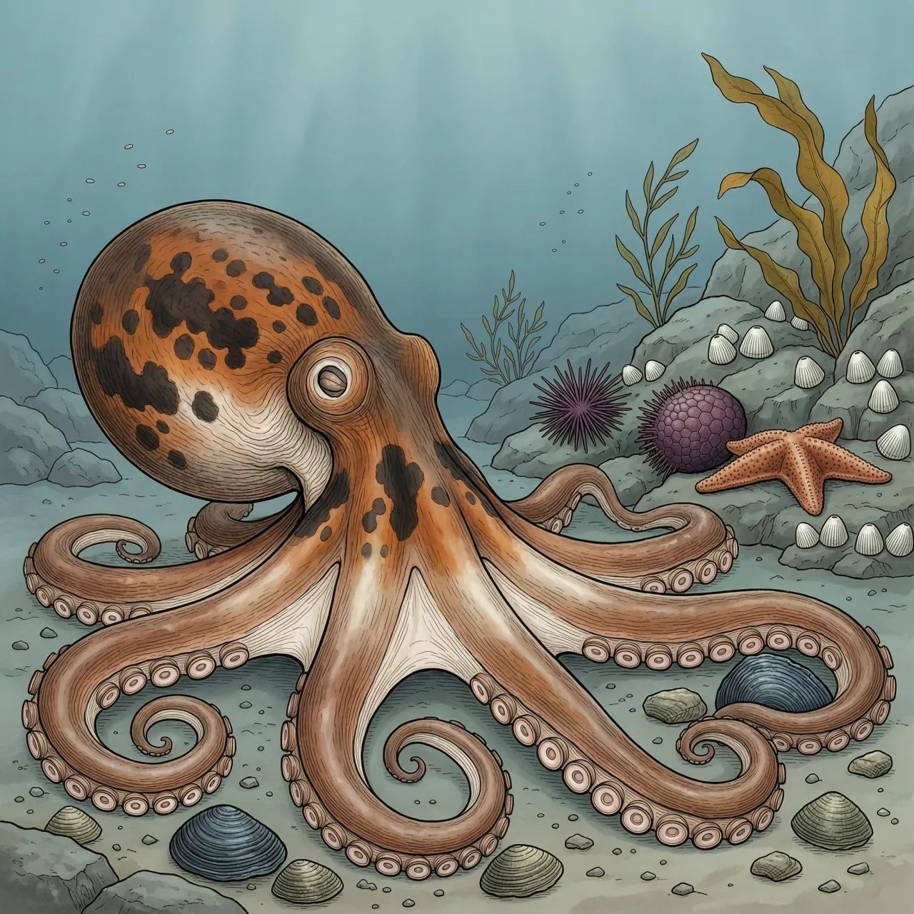
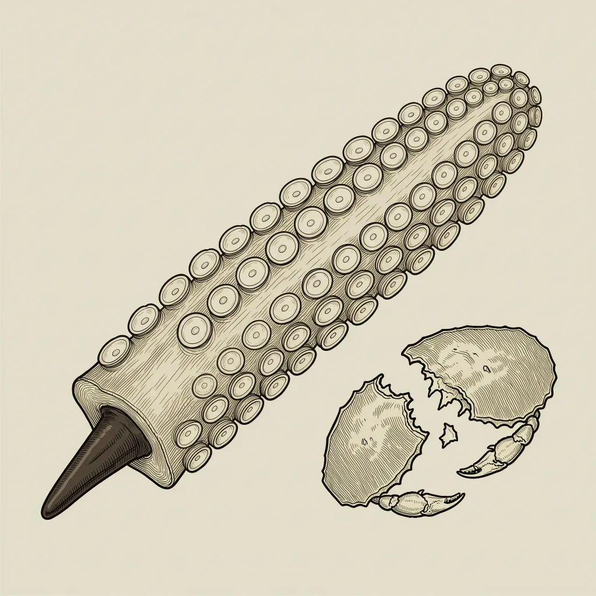

它常被认为是最重的章鱼，成体重约15公斤，腕足展开可达4.3米。北太平洋巨型章鱼分布在环北太平洋的近岸海底，常待在水深65米以浅处。它用吸盘把虾、蟹和贝类送进口中，以甲壳质的喙咬碎，也吃白斑角鲨。雌体产完卵便不再进食，守着卵直到孵化。
皮肤一收一舒就换颜色：光滑的体表靠色素细胞调深浅，北太平洋巨型章鱼因此能整只隐进周围环境里。它最常待在水深65米以浅的海底，也可以上到更浅或下到更深的地方。分布几乎绕了北太平洋一圈——南起墨西哥的下加利福尼亚，沿美国西海岸北上到阿拉斯加与阿留申群岛，包括加拿大的不列颠哥伦比亚省，越过太平洋往西是堪察加半岛，南到东海、朝鲜海、日本海和日本东岸。成体重约15公斤，腕足展开可达4.3米，曾发现过重达71公斤的个体。
取食靠腕足上的吸盘：把食物一路送进口中，再用甲壳质的喙咬碎。北太平洋巨型章鱼的主食清单是虾、蟹、扇贝、鲍鱼、蛤蜊和鱼类。但它的食谱不止于此——圈养个体抓到过长达1米的白斑角鲨，野外个体的排出物里也出现过白斑角鲨的尸体，据此估计它在野外本来就猎捕这种鲨鱼。反过来，体型这么大的章鱼照样被吃：港海豹、水獭、太平洋睡鲨和抹香鲸都是它的天敌，在美国它还被渔猎。
北太平洋巨型章鱼的雌体把繁殖押成唯一一次：产完卵就不再进食，长时间守着卵，不出去捕猎；卵孵化之时，也就是它死亡之日。一生的能量全押在这一批卵上，没有第二次。更反常识的是它的时间尺度——章鱼的寿命普遍很短，而这个物种因为体型巨大，估计活得比多数同类久一些。守卵到这件事，发生在一种本该相对长寿的章鱼身上。
